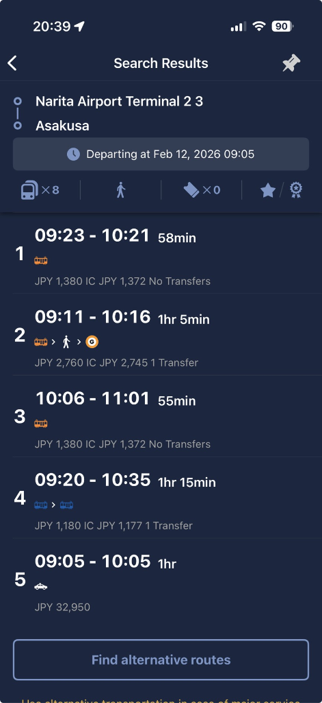

💰 Budget & Symbols
💵 Budget: 20,000 THB
ค่าเดินทาง: ~4,500 THB (Transport)
ค่ากิน: ~5,000 THB (Food)
เหลือช้อป: ~10,500 THB (Shopping)
🚆 สัญลักษณ์รถไฟ (Train Symbols)
- G Ginza Line: สายสีส้ม (Metro) (Orange Line)
- JC JR Chuo Line: สายสีส้มเข้ม (Rapid) (Dark Orange Line)
- JT JR Ueno-Tokyo: สายสีส้ม/เขียว (Orange/Green Line)
- EO Enoden: สายสีเขียว (Kamakura) (Green Line)
- BUS Blue Line Bus: สายสีฟ้า (ไป Shojiko) (Blue Line to Shojiko)
BKK - NRT | Tue 11 Feb

🛫 เจอกันที่ Suvarnabhumi Airport (Meet at Suvarnabhumi Airport)
Check-in / Load กระเป๋า (Check-in / Load Luggage)
✈️ Take off to Narita
นอนบนเครื่อง (บิน ~6 ชม.) (Sleep on plane - 6 hrs)
Arrival | Wed 12 Feb
🛬 ถึงสนามบิน Narita Airport (Terminal 2) (Arrive at Narita Airport Terminal 2)
🚆 นั่งรถไฟเข้า Asakusa ¥1,300 (Train to Asakusa)
1. รถไฟ: KS Keisei Sky Access Express (Direct)
2. จุดสังเกต: มองหาป้าย "Keisei Line" และรถไฟสี สีส้ม / แดงกุหลาบ (Orange/Rose Red) (Look for Keisei Line sign)
3. การเดินทาง: นั่งยาวรวดเดียวไม่ต้องเปลี่ยนขบวน ลงสถานี Asakusa (A18) (Direct train, no transfer)
🏨 ฝากกระเป๋า / Check-in @ Kaike Asakusa (Drop Luggage / Check-in)
Your Name & Tatego-Hama | Thu 13 Feb
🎌 เลือกแผนช่วงบ่าย (Mission Select) (Select Afternoon Mission)
นั่งบัสไปหาดลับ คนน้อย ถ่ายรูปสวย ไม่เหนื่อย (Bus to secret beach, less people, nice photos, easy)
เช่าจักรยานหน้าสถานี ปั่นรอบเล็ก (Route B) ใช้เวลา ~3 ชม. ได้เหงื่อและวิวสวยมาก (Rent bike at station, Route B small loop, ~3 hrs, good exercise and view)
⏰ ตื่นนอน / อาบน้ำแต่งตัว (Wake up / Shower)
🚆 Start: ไปสถานี Kanda ¥180 (Go to Kanda Station)
G Ginza Line (สายสีส้ม) (Orange Line): Asakusa (G19) → Kanda (G13)
🚆 Next: ไป Yotsuya (Your Name) (Go to Yotsuya)
JC JR Chuo Line (สายสีส้มเข้ม Rapid) (Dark Orange Rapid): Kanda → Yotsuya
🎬 ถ่ายรูปบันไดแดง "Suga Shrine" (Photo at Red Stairs "Suga Shrine")
เดิน 10 นาที (เปิด Map: Suga Shrine Steps) (Walk 10 mins - Open Map: Suga Shrine Steps)
🚆 ไป Shinjuku ¥170 (Go to Shinjuku)
JC JR Chuo Line (สายสีส้มเข้ม) (Dark Orange): Yotsuya → Shinjuku
🚶 ไปท่ารถบัส "Busta Shinjuku" (Go to Bus Terminal "Busta Shinjuku")
ขึ้นลิฟต์ไปชั้น 4 (New South Gate) (Elevator to 4F - New South Gate)
🚌 Bus ออกเดินทางไป Kawaguchiko ¥2,200 (Bus to Kawaguchiko)
🗻 ถึง Kawaguchiko Station (Arrive at Kawaguchiko Station)
ซื้ออาหารเที่ยง เตรียมเลือกแผน! (Buy lunch, prepare to choose plan!)
ขึ้นรถบัสสายสีฟ้า (Blue Line) (Take Blue Line Bus)
ป้ายรถ: เบอร์ 1 (หน้าสถานี) (Bus Stop: No. 1 - in front of station)
สายรถ: Narusawa / Shojiko / Motosuko Line
ลงป้าย 116 "Tatego-Hama" (Get off at stop 116 "Tatego-Hama")
ใช้เวลาเดินทางประมาณ 40 นาที (Travel time ~40 mins)
🌊 ปิคนิคริมหาด Tatego-Hama (Picnic at Tatego-Hama Beach)
ชมวิวฟูจิอุ้มลูก (Kodaki Fuji) สงบๆ (View Kodaki Fuji, peaceful)
รอรถบัสขากลับ (สายเดิม) (Wait for return bus - same line)
เช็ครอบรถให้ดี รถมาน้อย (แนะนำรอบ ~14:50) (Check schedule carefully, few buses - recommend ~14:50)
🚴 เริ่มเช่าจักรยาน (Route B ~20km) (Start renting bike - Route B ~20km)
ร้านแนะนำ: Rentacycle Poohsan (IG)
🎥 วิธีเช่า: ดูคลิปสอน (TikTok) (Watch tutorial - TikTok)
⚠️ Passport + Cash Only (เตรียมไปให้พร้อม!) (Prepare in advance!)
ควรเลือก E-Bike ถ้าไม่อยากเหนื่อยมาก (Choose E-Bike if you don't want to get too tired)
📍 จุดที่ 1: Kawaguchiko Bridge
ปั่นข้ามสะพาน ชมวิวฟูจิกลางทะเลสาบ (ทางลัด Route B) (Cross bridge, view Fuji from lake - Route B shortcut)
📍 จุดที่ 2: Oishi Park & Hana Terrace
แวะพักกินกาแฟ/ซอฟต์ครีม ชมสวนดอกไม้ (Coffee/Soft cream break, flower garden)
📍 จุดที่ 3: Yagizaki Park
ปั่นเลาะริมทะเลสาบฝั่งทิศใต้ สวนสวยและเงียบสงบ (Cycle along south lake, beautiful and quiet park)
🏁 คืนจักรยานที่สถานี (Return bike at station)
รวมเวลาปั่น+พัก ประมาณ 3 ชม. (ทันรถบัสรอบ 16:00 สบายๆ) (Total time ~3 hrs - catch 16:00 bus easily)
🚌 ขึ้นรถบัสกลับ Shinjuku ¥2,200 (Bus back to Shinjuku)
ขึ้นที่สถานี Kawaguchiko (จุดเดิมที่ลงรถตอนเช้า) (Board at Kawaguchiko Station - same drop-off point)
🚆 กลับ Asakusa (ทางลัด) ¥500 (Back to Asakusa - Shortcut)
1. JC JR Chuo Line: Shinjuku → Akihabara
2. TX Tsukuba Express: Akihabara → Asakusa
Registration Day | Fri 14 Feb

⏰ ตื่นนอน / เตรียมตัวลงทะเบียน (Wake up / Prepare for registration)
💻 12:00 PM (10:00 Thai Time)
MISSION: ลงทะเบียนเรียน @ Hotel Wi-Fi (Register for classes)
เช็คเน็ตให้พร้อม เตรียม Link สำรอง (Check internet, prepare backup links)
🚆 เดินทางไป Shibuya ¥260 (Go to Shibuya)
G Ginza Line (สายสีส้ม) (Orange Line): Asakusa (G19) → Shibuya (G01)
นั่งยาวสุดสาย ต้นทาง-ปลายทาง (ได้นั่งแน่นอน) (End-to-end line, guaranteed seat)
🏙️ Shibuya Crossing / Hachiko / Shopping
เดินเล่น Parco (Nintendo/Pokemon Center) (Walk around Parco)
🚆 นั่งรถไฟกลับที่พัก ¥260 (Train back to hotel)
G Ginza Line (สายสีส้ม) (Orange Line): Shibuya → Asakusa
Kamakura (Slam Dunk) | Sat 15 Feb
⏰ ตื่นนอน (Wake up)
🚆 Step 1: ไปสถานี Ueno ¥180 (Go to Ueno Station)
G Ginza Line (สายสีส้ม) (Orange Line): Asakusa → Ueno
🚆 Step 2: ไปสถานี Kamakura ¥950 (Go to Kamakura Station)
JT JR Ueno-Tokyo Line (สายสีส้ม/เขียว) (Orange/Green Line): Ueno → Kamakura
มองหาขบวนที่ไป "Odawara", "Zushi", หรือ "Atami" (Look for train to "Odawara", "Zushi", or "Atami")
🚆 Step 3: เปลี่ยนไปขึ้นรถไฟ Enoden Pass ¥800 (Transfer to Enoden Train)
ซื้อตั๋ว "Enoden 1-Day Pass" ที่ตู้ขายตั๋วสถานี Kamakura (Buy "Enoden 1-Day Pass" at ticket machine)
🚃 นั่งรถไฟไปถ่ายรูป Slam Dunk (Train to Slam Dunk photo spot)
EO Enoden Line (สายสีเขียว Vintage) (Green Vintage Line): Kamakura → Kamakurakōkō-Mae
⛩️ นั่งรถไฟไปวัดพระใหญ่ (Kotoku-in) (Train to Great Buddha - Kotoku-in)
EO Enoden Line: Kamakurakōkō-Mae → Hase Station
🚆 นั่งรถไฟกลับ Tokyo (Asakusa) ¥1,130 (Train back to Tokyo)
1. JT Kamakura → Ueno
2. G Ueno → Asakusa
Matsuda Sakura Festival | Sun 16 Feb
⏰ ตื่นนอน (Wake up)
🚆 Step 1: ไปสถานี Ueno ¥180 (Go to Ueno Station)
G Ginza Line (สายสีส้ม) (Orange Line): Asakusa → Ueno
🚆 Step 2: ไปสถานี Matsuda ¥1,300 (Go to Matsuda Station)
JT JR Ueno-Tokyo Line (สายสีส้ม/เขียว) (Orange/Green Line): Ueno → Kozu
เปลี่ยนขบวนที่ Kozu → JR Gotemba Line → Matsuda (Transfer at Kozu)
🌸 ชมซากุระ Matsuda Sakura Festival (View Sakura at Matsuda Festival)
นั่ง Shuttle Bus จากหน้าสถานีขึ้นไปจุดชมวิว (Take Shuttle Bus from station to viewpoint)
🚆 ถึงที่พัก พักผ่อน (Arrive at hotel, rest)
Departure | Mon 17 Feb
⏰ ตื่นนอน / Check-out (Wake up / Check-out)
🚆 ไปสนามบิน Narita Airport ¥1,300 (Go to Narita Airport)
รถไฟ: KS Keisei Sky Access Express (Direct) (Train: Keisei Sky Access)
จากสถานี Asakusa (A18) → Narita Terminl 2-3 (From Asakusa Station)
🏮 Local Spots
Hoppy Street
Izakaya

Senso-ji
Night View

Suga Shrine
Red Stairs

Kamakura
Crossing